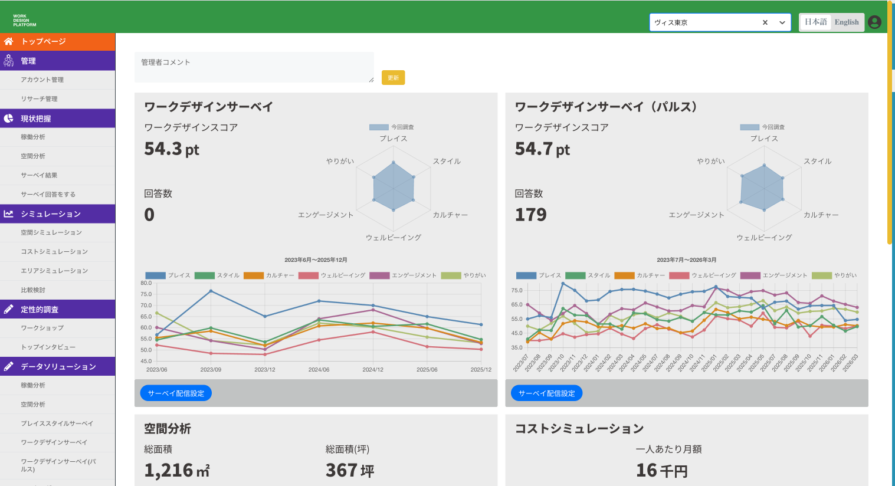
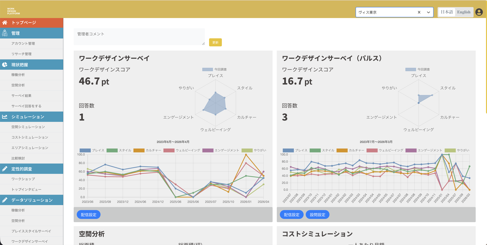
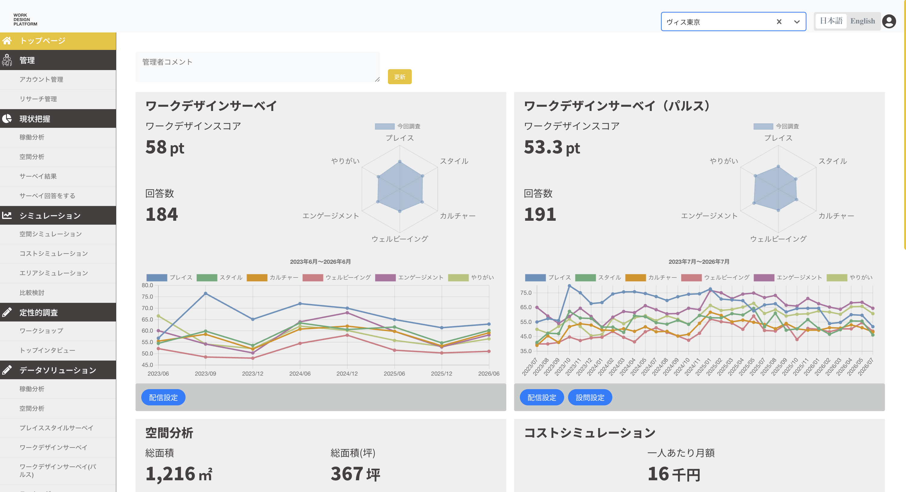

WDP チーム内報告書：本番環境への誤操作
本資料は、WDP本番環境への誤アップロード事象について、チーム内で共有・振り返りを行うための報告書です。
顧客向け報告書の内容をベースに、原因・影響確認・再発防止策を整理しています。
1. 事象概要
自動テスト用スクリプト作成のため、検証メンバーが STG と PRO の2タブを並行して開き、両環境の値を比較しておりました。 操作中、タブが近接していたこと、および両環境の画面外見が酷似していたことから、環境を取り違え、本番環境（PRO）へデータを投稿してしまいました。
本日別件で検証チーム内でテスト内容の報告を行っていた際に、上記の問題が発覚しました。
2. 影響範囲と確認結果
| 対象クライアント | ヴィス東京 |
|---|---|
| 影響箇所 | TOPページ ／ 稼働分析エリア ／ 更新日 |
| 誤ってアップロードしたファイル |
手入力のExcelデータ形式 ・従業員情報 ・出社滞在情報 |
確認結果
- 稼働分析設定は計算方式として Meraki が設定されていたため、アップロードされたファイル形式との差異により、新規データの更新はエラーとなり完了しませんでした。
- そのため、現時点まで プロダクトデータへの差異・影響は確認されておりません。
- さらに確実を期すため、S3上に保管されているヴィス東京向けの現行適用データ（従業員情報・出社滞在情報）を取得し、再アップロードを実施しました。
- その結果、以下の範囲においても表示データの差異・誤りは確認されませんでした。
- トップ_稼働分析の表示データ
- 現状把握_稼働分析の表示データ
- 唯一、TOP画面の稼働分析エリアにおける 「更新日」が本日日付に変更された ことを確認しております。
3. 原因
現在、システムへの自動テスト導入に向け、検証工数削減のためのスクリプト作成を進めております。 その過程で、計算値・表示値の正確性を担保するため、STGとPROの値を照らし合わせる必要があり、検証メンバーが両環境のタブを並行して操作しておりました。
本番環境とSTG環境は画面外見が非常に似ており、ドメイン以外での判別が難しい状態であったことに加え、 2つのタブを近接して操作していたことから、検証メンバーが環境を取り違え、本番環境へデータを投稿してしまいました。
補足（チーム内） 本件は本番環境への誤操作として 2回目 の発生です。 チーム内の振り返りでは、本番環境での操作に対する慎重さ・報告意識が十分でなかった点も共有されています。
4. 再発防止策（人為的ミスのリスク低減）
4.1 UIによる環境色分け（対応済み）
開発／STG環境のヘッダー色を変更し、本番環境と視覚的に明確に区別できるようにしました。 環境判定用フラグにより非本番環境のみ配色を適用し、本番環境のUIには影響させません。
| 環境 | 識別ポイント |
|---|---|
| 開発環境 | ヘッダーを緑に変更 |
| STG環境 | ヘッダーを黄に変更 |
| 本番環境 | 従来どおりの配色（色分け変更なし） |

証跡A：開発環境（緑ヘッダー）
証跡B：STG環境（黄ヘッダー）
証跡C：本番環境（従来配色）4.2 ブラウザ拡張機能の導入（メンバー端末）
チームメンバーのローカル端末にブラウザ拡張機能を導入し、 本番環境（PRO）へアクセスしていることを即座に警告表示します。
- 目的：UI色分けと併用し、「現在操作している環境が本番である」ことを端末側でも明確に意識させる
- 対象：検証・開発メンバー全員の作業用ブラウザ
- 期待効果：STGとPROを並行操作する際の取り違えを、画面内表示とブラウザ側警告の二重で抑止する
4.3 運用ルールの徹底
-
本番環境（PRO）での操作は事前承認必須
本番環境での操作を行う場合は、実施前にリーダーへ報告し、承認を得たうえで実施します。 アップロード、設定変更、再設定など、データ変更を伴う操作に限らず、本番環境への操作全般を対象とします。 -
環境比較作業も承認プロセスの対象とする
STGとPROの値比較が必要な場合も、事前に報告・承認を行い、承認なく本番環境へ操作を行いません。 -
教育・共通認識の継続
「本番データの保護を最優先とする」ことをチーム共通ルールとして明文化し、定期的に周知します。
5. チーム内アクション一覧
- 1. UIによる環境色分け STG／DEVのヘッダー色分けを適用済み。証跡確認済み。本番環境の配色は変更しない。
- 2. ブラウザ拡張機能の導入 メンバー端末へ、本番環境アクセス時に警告する拡張機能を作成・配布・インストールする。
- 3. 本番環境操作の事前承認 本番環境での操作は、リーダー承認後にのみ実施する。チャットまたはチケットで証跡を残す。
- 4. チケット管理 進捗・判断は DEV_WDT-1151 で継続管理する。
6. まとめ
今回はデータ本体への影響は確認されなかったものの、更新日の変更が発生し、顧客信頼に関わる事案となりました。 再発防止として、UI色分け（対応済み）、ブラウザ拡張機能による本番環境警告、 本番環境操作の事前承認を徹底してまいります。